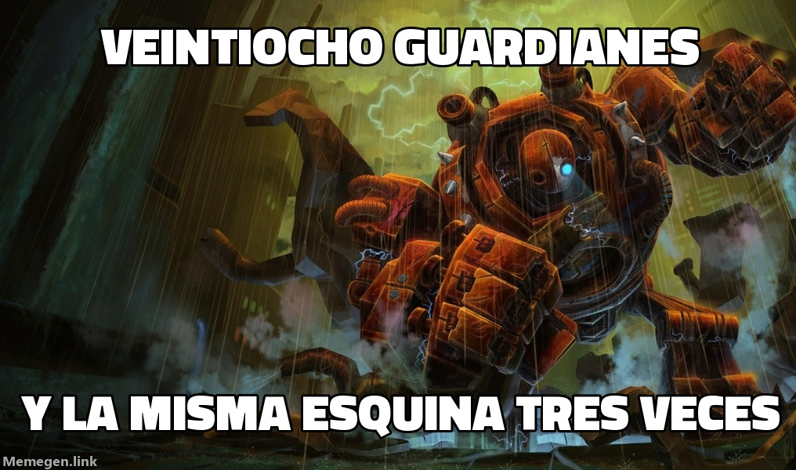

SUCESOS · Comisaría de Piltover
Entrevista
«La tercera vez reconocí el arbusto»
Blitzcrank salió cuatro veces el domingo, con dos cuentas y un solo dueño. Prepara su tercera denuncia.

Le encontramos en un taller de Zaun, con la carcasa abollada y el gancho envuelto en cinta aislante. Saiko le sacó dos veces por la mañana con su cuenta nueva del reto y dos por la tarde con la de siempre. El robot habla despacio, como quien ya ha contado esto dos veces ante un juez.
—¿Cuántas veces le sacó Saiko el domingo?
—Cuatro. Según mis cálculos, a este ritmo me jubilo antes que él.
—¿Cuál fue la mejor?
—La de seis minutos. Nadie mató, nadie murió, nadie asistió, y ganamos. Es la única partida de mi vida en la que mi dueño no hizo nada mal.
—Por la tarde puso cuarenta y seis guardianes en una sola partida.
—Ciento once de visión. Vi el mapa entero. Le vi morir nueve veces con todo detalle, bien iluminado.
—¿Y la última?
—Cuatro muertes en los siete primeros minutos. Tres en el mismo sitio. No tengo libre albedrío, pero tengo memoria: la tercera vez reconocí el arbusto. Él no.
—Empezó el día en Esmeralda IV a cero puntos.
—Y lo acabó en Esmeralda IV a cero puntos. Ganó una, perdió otra. Una tarde entera para volver al mismo sitio.
—Como sus muertes.
—Es lo único en lo que es constante.